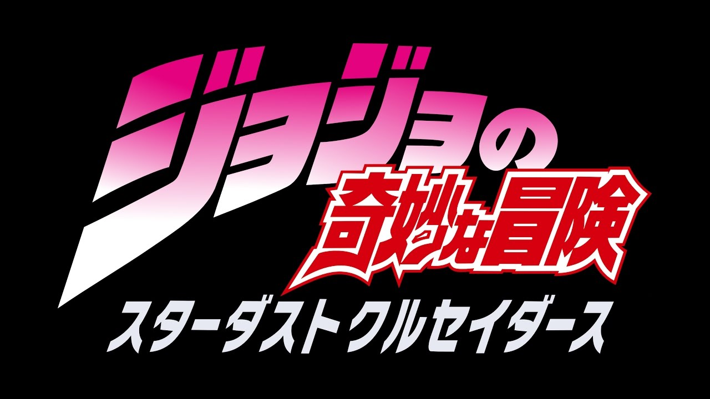
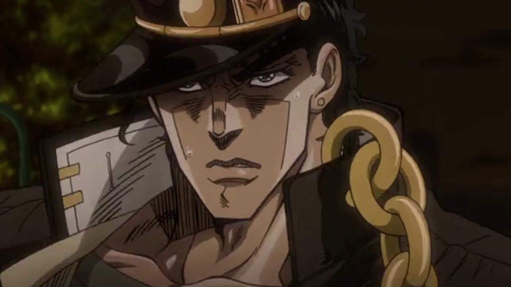
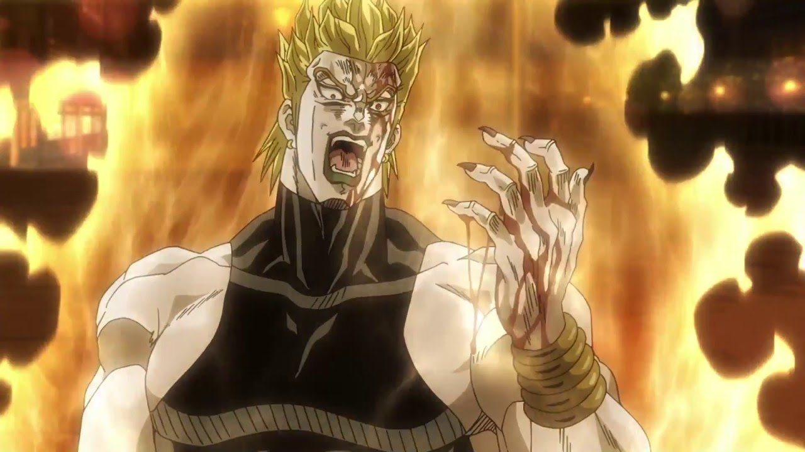
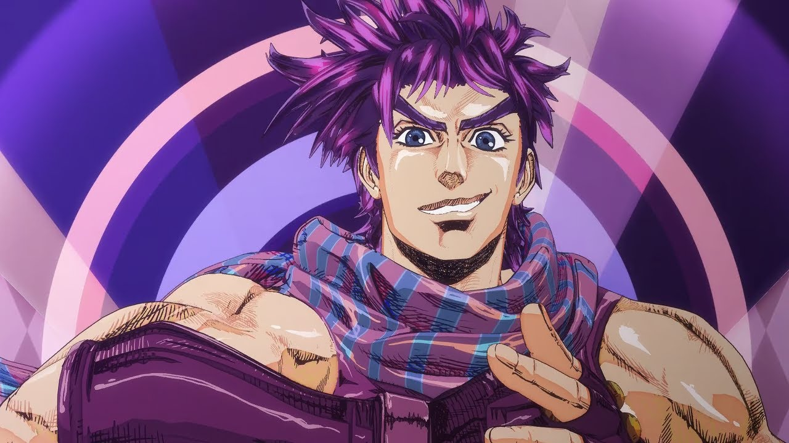
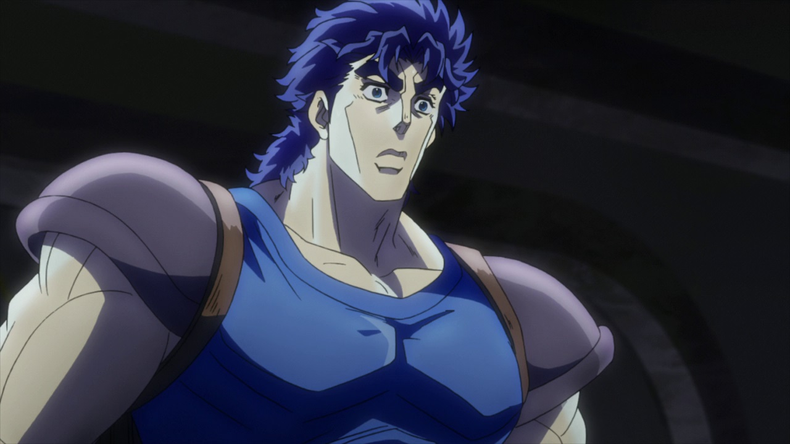
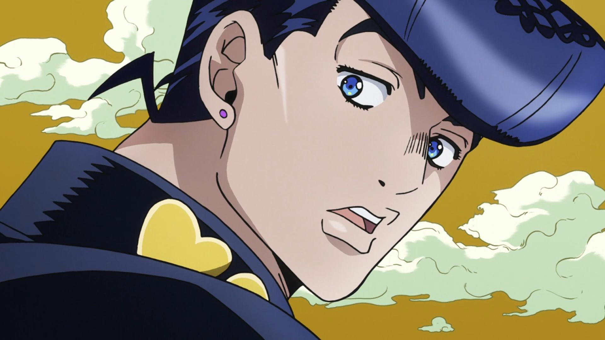
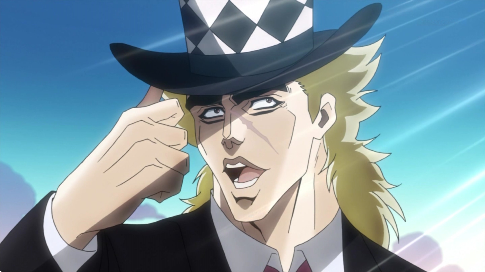
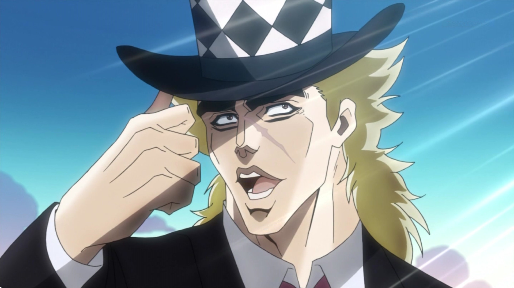

 Аниме жожа - это жоское рубилово двух NIGUS с никаи Joparo и Dildo
это Joparo:
это Dildo(главный NIGUS):
есть ещё жожа
  вот вам топ вайфу:
 

Многие пропускают первую арку «ДжоДжо», поскольку она во многом отличается от последующих и незаслуженно считается скучной, но именно в ней происходит знакомство с наиболее важными персонажами серии. По сюжету, первый ДжоДжо — британский аристократ XIX века Джонатан Джостар — противостоит Дио Брандо, планирующему обманом лишить героя наследства. В погоне за богатством и могуществом Дио обращается в вампира и обретает бессмертие с помощью древнего артефакта — каменной маски. Чтобы сразить соперника, Джонатан обучается боевому искусству «Хамон». Помимо главного героя и антагониста в Phantom Blood появляются и другие важные для вселенной персонажи: наставник ДжоДжо — Уилл Цеппели, их союзник — Роберт Спидвагон и жена Джонатана — Эрина Пендлтон. Цеппели погибает во время очередного сражения с Дио, но имя его семьи ещё не раз появится в будущих арках серии. События первой части заканчиваются, когда ДжоДжо побеждает Дио ценой собственной жизни. Оба пропадают без вести. Эрина спасается и отправляется в Америку с сиротой Элизабет, спасённой Джонатаном. Там она вскоре рожает сына Джорджа.
Герой второй арки JoJo's Bizarre Adventure — американский подросток Джозеф Джостар, сын Джорджа и Элизабет. Он живёт в Нью-Йорке 30-х годов XX века вместе с бабушкой Эриной.Семья Джостаров всё ещё дружит с союзником Джонатана — Робертом Спидвагоном, — который разбогател и основал собственную компанию. С этих пор, как только в сюжете потребуется объяснение, откуда у главных героев деньги, ответ всегда один: их предоставил «Фонд Спидвагона». И не важно, когда происходит действие: даже после смерти Спидвагон незримо присутствует в каждой арке ДжоДжо, а его организация щедро помогает Джостарам. Восемнадцатилетний Джозеф противостоит создателям каменной маски — могущественной древней расе, во всём превосходящей людей. Джозеф, как его дед, учится использовать Хамон, чтобы победить врагов. Соратник ДжоДжо и внук Уилла Цеппели — Цезарь, как и предок, погибает, помогая товарищу.Во время событий второй арки Джозеф встречает свою будущую жену — Сьюзи Кью, и в последствии у них рождается дочь — Холи.
Холи выходит замуж за японского джазового музыканта и рожает сына — Джотаро Куджо. Семнадцатилетний юноша обнаруживает у себя странные способности: он может призывать духа, которого не видят обычные люди. Приехавший из США Джозеф объясняет внуку, что теперь они оба — обладатели стендов — боевых духов, воплощающих силу владельцев. Причина появления стендов у Джостаров — возвращение Дио из мёртвых.После смерти Джонатана Джостара Дио завладел его телом, вживив ему свою голову. Семейство Джостар связано кровными узами с телом Джонатана, поэтому когда Дио стал обладателем стенда, подобные способности проявились у всей семьи. Стенд появился и у Холи, но она не может его контролировать и медленно умирает. Чтобы спасти мать, Джотаро с дедом, его другом Мохаммедом Абдулом и школьником Какёином Нориаки отправляются убить Дио.
Чтобы добраться до него, герои проделывают огромный путь, по дороге сражаясь с другими обладателями стендов. Хамон в битвах отныне использует только Джозеф: техника эффективна только против вампиров и неживых противников, а все пользователи стендов — простые люди.По пути к Джостарам присоединяются новые союзники: француз Жан-Пьер Польнарефф и собака Игги. Героям удаётся победить Дио, но в живых остаются только Джотаро, Джозеф и Польнарефф.
В 1999 году уже двадцативосьмилетний Джотаро узнаёт, что у Джозефа есть внебрачный сын, живущий в Японии, — Джоске Хигашиката. Он отправляется встретиться со своим дядей, который младше его на двенадцать лет, в небольшой японский городок Морио, в котором происходят странные события. В город попадает могущественный артефакт, ранее принадлежавший Дио, — лук со стрелами, способными пробудить в человеке стенд.Вместе с Джотаро и друзьями — школьниками Коичи Хиросе и Окуясу Ниджимурой, и мангакой Роханом Кишибе — Джоске помогает поймать в городе серийного убийцу. Также в Diamond Is Unbreakable последний раз появляется уже престарелый Джозеф, вместе с которым из сюжета навсегда исчезает Хамон.Все герои Diamond Is Unbreakable — носители стендов. Стенды Джостаров обычно мощны в ближнем бою и обладают особыми способностями: Джотаро останавливает время, Джоске чинит и исцеляет всё, к чему прикасается. Рохан умеет читать и переписывать судьбу человека, будто книгу. Стенд Коичи имеет три «акта», каждый из которых обладает разными характеристикам и способностями, связанными со звуком.
Во время событий Diamond Is Unbreakable Джотаро выстраивает дружеские отношения с Коичи, который видит в нём наставника и надёжного союзника. Именно Коичи Джотаро поручает поехать в Италию, где тот должен найти пятнадцатилетнего Харуно Шиобана. Преодолеть языковой барьер Коичи помогает Рохан, который мгновенно «учит» его итальянскому с помощью своего стенда.По приезде в Италию, Коичи находит подростка в Неаполе, но под именем Джорно Джованна. Тот зарабатывает на жизнь воровством и хочет стать гангстером. Причина, по которой Джотаро заинтересовался пятнадцатилетним мальчиком, кроется в запутанной родословной Джостаров.В 2001 году, когда разворачиваются события «Vento Aureo», живы сразу несколько потомков Джостаров: Джотаро — внук Джозефа, и Джоске — сын Джозефа. О самом Джозефе на этот момент ничего неизвестно, но вероятно он всё ещё жив. Частью семьи Джостар можно считать и Харуно Шиобана, который в детстве переехал в Италию из Японии, взял фамилию отчима и стал называться Джорно Джованна.Джотаро выясняет, что Джорно — сын Дио, который был зачат уже после того как Дио завладел телом Джонатана. Таким образом, Джорно — сын как Дио, так и Джонатана, что делает его членом семьи Джостар и следующим ДжоДжо. Родством сразу с двумя мужчинами объясняется и резкое изменение во внешности Джорно: когда он обрёл свой стенд, он стал блондином, как Дио.
В новой части аниме «JoJo's Bizarre Adventure» Джорно окунётся в криминальный мир Неаполя и попытается стать главой итальянской мафии. Первый эпизод «Vento Aureo» уже доступен в сети, а новые серии будут выходить каждую пятницу.
МОЙ ДИСКОРДИК